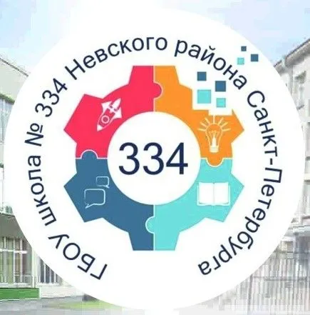
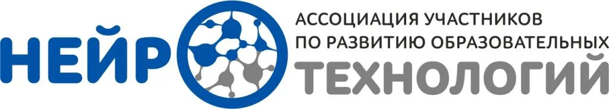
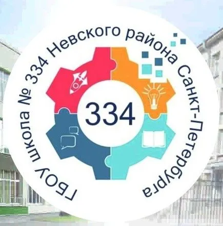
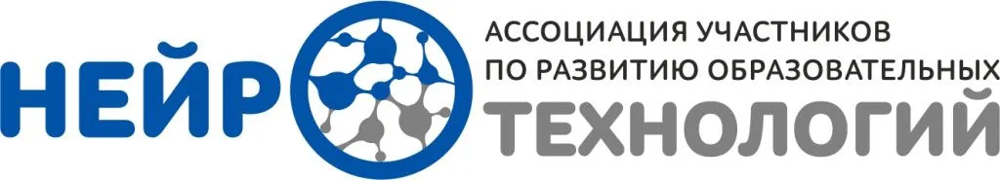

Уважаемые коллеги, партнёры, друзья!
Мы рады сообщить, что 10 и 11 мая 2024 года в Санкт-Петербурге пройдут Международные соревнования по робототехнике и цифровым технологиям «ДЕТалька-2024». Тематика соревнований этого сезона – «Сила инженерии». Соревнования пройдут на площадке «Точка Кипения – Санкт-Петербург» и в концертном зале А2, в котором также пройдет торжественное открытие.


Целью проведения соревнований является сформировать научно-техническое и инженерное мышление обучающихся и стимулировать школьников и детей дошкольного возраста в выборе профессий технической и IT направленности.
Организатор соревнований – группа компаний «Брейн Девелопмент» и «РОБОТРЕК», при поддержке:

 


В Пермском крае и Республике Саха (Якутия) в марте 2024 пройдут региональные отборочные этапы (подробная
информация в регламенте стр. 5).
Регистрация на соревнования будет осуществляться в онлайн формате на сайте www.detalka-fest.ru с 1 ноября 2023 по 15 февраля 2024. В
ноябре будет проведет вебинар по соревнованиям.
Все вопросы по регламенту соревнований и организационные вопросы можете задать на почту: detalka2024@outlook.com
С 1 ноября мы также обновим информацию по возможным пакетам участников с возможностью помощи в организации проживания, питания и экскурсионным программам.
Организационные взносы участия в соревнованиях не предусмотрены.
В рамках соревнований ДЕТалька для детей дошкольного возраста организованы следующие состязания:
- «Юный Пифагор» - миссия, в которой учащимся необходимо построить робота, способного самостоятельно передвигаться от зоны «старт/финиш» в зону, обозначающую правильный ответ, и вернуться назад в зону «старт/финиш»;
- «Занимательная математика» - задачей данного состязания является решение нескольких несложных арифметических примеров на сложение и вычитание и перемещение соответствующего правильному ответу куба в зону ответов;
- «Нейролабиринт» - миссия, в которой учащимся необходимо пройти лабиринт с помощью робота, у которого направление движения можно менять с помощью пульта дистанционного управления, а скорость движения зависит от уровня концентрации;
- «Творческий проект» по робототехнике (в т.ч. с возможностью интеграции с нейротехнологиями) и электротехнике.
Дети начальной школы смогут поучаствовать в направлениях:
- «Робофутбол»;
- «Сумо»;
- «Автоматическая агроферма» – движение по черной линии;
- «Чистый город» – как можно скорее переместить изделия для переработки к месту назначения согласно их категории;
- «Механик F1» – задача собрать робота, который может показать хорошие скоростные и маневровые характеристики на гоночной трассе;
- «Творческий проект».
Для учеников средней и старшей школы будут проведены состязания по следующим направлениям:
- «Автоматическая система пожаротушения леса» – движение по черной линии с дополнительными задачами;
- «Волейбол»;
- «Сумо»;
- «Компьютерное зрение» (варианты на выбор с «Витрек»/«Умной камерой») - задача запрограммировать робота с компьютерным зрением, способного двигаться автономно;
- «Творческий проект» по робототехнике, в т.ч. с возможностью интеграции с компьютерным (техническим) зрением, искусственным интеллектом, нейротехнологиями и интернетом вещей.
Дети с ОВЗ любого возраста также допущены ко всем состязаниям и будут оцениваться отдельно.
В рамках проведения соревнований будет организована зона «Try Skills», где участники и гости соревнований смогут поучаствовать в различных активностях, например, поуправлять манипуляторами и роботами с компьютерным зрением, проверить свои силы в перетягивание каната с помощью нейроинтерфейсов и др.
Приглашаем к участию команды из всех регионов России и наших зарубежных гостей. Мы хотим, чтобы соревнования ДЕТалька прошли в праздничной дружеской атмосфере в лучших традициях нашей многолетней истории. Чтобы площадка соревнований стала еще и местом общения и обмена опытом педагогов и наставников. Темы деловой программы будут объявлены позднее.